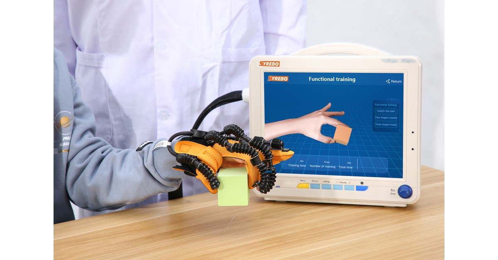

Клинические исследования Syrebo
Обзор исследований реабилитации с роботизированной перчаткой
Из публикации
Combined Effect of Robotic Hand Training with Neuromuscular Electrical Stimulation on Hand Function and Quality of Life in Stroke Patients: A Randomized Controlled Trial
Alaa Elhamy Mansour Abd-Eltwab, Wael Shendy, Ebtesam Fahmy, et al.
Имена авторов и их порядок взяты из исходной рубрики и требуют проверки по окончательной версии журнала.
The Egyptian Journal of Hospital Medicine, 2026;103(1):2607–2611
DOI: 10.21608/ejhm.2026.504952
Рисунки статьи на этой странице не воспроизведены.
Примечание об источнике: Изучена полная версия, размещённая автором; окончательную версию журнала ещё предстоит проверить.

Сорок шесть человек в хроническом периоде случайным образом распределили по группам, 42 завершили исследование. Основная группа получала роботизированную терапию кисти с синхронной нервно-мышечной электростимуляцией и обычную физиотерапию. Контрольная группа получала обычную физиотерапию. По исходной рубрике, через шесть недель межгрупповое значение для силы хвата составило p=0.002; оно требует проверки по окончательной версии журнала. Для теста Purdue Pegboard на пораженной кисти межгрупповое p=0.076, поэтому этот результат нельзя назвать значимым между группами. В основной группе одновременно использовали две технологии, поэтому всю разницу нельзя приписать перчатке.
Сила хвата — это усилие. Тест с доской и штырьками — задача на размещение небольших штырьков. Их можно измерять одновременно, но оба результата не обязательно будут «значимыми». Если цитировать только показатель с межгрупповым различием, второй результат останется за кадром.
Когда стимуляция и роботизированная кисть применяются вместе, речь идет о сочетании. Обычная физиотерапия в контрольной группе ближе по длительности, чем по содержанию.
В хроническом периоде, через месяцы после инсульта, спонтанное восстановление различается и его следует учитывать при интерпретации оценки. Силу хвата и ловкость по-прежнему нужно разделять. Хват — это сила. Тест с доской состоит в размещении небольших штырьков. Если стимуляция и роботизированная кисть применяются на одном занятии, а контрольная группа получает обычную физиотерапию, межгрупповая разница относится к этому сочетанию по сравнению с обычной помощью. Это не сравнение одной перчатки с пустым часом.
Включали людей 50–65 лет, у которых после инсульта прошло от шести до 24 месяцев. Основная группа получала 20 минут роботизированной терапии кисти с синхронной стимуляцией, затем 30 минут обычной физиотерапии. Контрольная группа получала 50 минут обычной физиотерапии. Занятия проходили три раза в неделю шесть недель. В версии, размещённой автором, указан прибор Syrebo, модель SY-HRC11; окончательную версию журнала ещё предстоит проверить. Фотография показывает брендовый сюжет; является ли она изображением устройства исследования, не подтверждено.
Основная группа получала 20 минут роботизированной терапии кисти с синхронной нервно-мышечной стимуляцией, затем 30 минут обычной физиотерапии. Контрольная группа получала 50 минут обычной физиотерапии. Занятия проходили три раза в неделю шесть недель. Возраст участников составлял 50–65 лет, после инсульта прошло от шести до 24 месяцев. В версии, размещённой автором, указан прибор Syrebo, модель SY-HRC11; окончательную версию журнала ещё предстоит проверить.
Здесь приведены сила хвата в килограммах и тест Purdue Pegboard для пораженной кисти. Качество жизни указано в названии статьи. Полная таблица подшкал не проверена по каждому пункту, поэтому подробно она здесь не рассматривается.
Дизайн исследования
Рандомизированное сравнение. Основная группа получала роботизированную терапию кисти с синхронной нервно-мышечной стимуляцией и обычную физиотерапию. Контрольная группа получала обычную физиотерапию. Общее время в обеих группах составляло 50 минут. В основной группе внутри этого времени сочетались две технологии.
Участники и сроки
Сорок шесть человек были распределены случайным образом, по 23 в каждой группе. Сорок два завершили исследование, по 21 в каждой группе. Три занятия в неделю в течение шести недель. Последующее наблюдение и полная таблица качества жизни не были проверены по каждому пункту в доступном тексте, поэтому здесь не раскрываются.
Основные результаты
Сила хвата: исходная рубрика сообщает для основной группы изменение с 14.87±1.97 кг до 19.33±2.41 кг, межгрупповое p=0.002. Тест Purdue Pegboard для пораженной кисти: внутри основной группы p=0.001, между группами p=0.076. В статье силу хвата можно описать как межгрупповое различие. Ловкость изменилась внутри основной группы, но не достигла традиционного порога значимости между группами. Эти два результата следует приводить вместе.
Исходная рубрика описывает межгрупповой сигнал по силе хвата после сочетания роботизированной тренировки кисти и стимуляции с обычной физиотерапией; этот результат требует проверки окончательной версии журнала. Она также различает изменение внутри группы и различие между группами. Результат по силе хвата не переносится автоматически на ловкость.
Исходная рубрика приводит два результата, которые требуют проверки по окончательной версии журнала: межгрупповое сравнение силы хвата имеет p=0.002, а межгрупповое p=0.076 для теста со штырьками на пораженной кисти не называют значимым. При передаче информации сохраняют описание комбинированной программы, 42 завершивших участников и шести недель. Изменение в килограммах не переписывается как процент эффекта продукта.
Ограничения Программа комбинированная, поэтому весь результат нельзя приписать перчатке. Сорок два человека и шесть недель. В версии, размещённой автором, указан прибор Syrebo, модель SY-HRC11; окончательную версию журнала ещё предстоит проверить. Значение p=0.076 для теста со штырьками нельзя называть значимым между группами. Полные результаты качества жизни не переписаны по каждому пункту. Непроверенные по пунктам оценки качества жизни не добавляются.